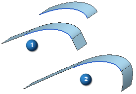

设置
对话框中的模式组允许您进行两项设置：
-
线性 — 在一个方向上线性延伸片体的边。
-
自然 — (默认选项)顺着曲面的自然曲率延伸片体的边。使用此选项可增大或减小片体的尺寸。

编辑副本复选框：
在曲面的副本中进行扩大操作。
如果清除编辑副本  复选框，则将编辑原始片体。
复选框，则将编辑原始片体。
命令将会自动选中这一选项，并在您试图扩大任意解析曲面(平面、圆柱、圆锥、球或圆环)或任意接合、缝合或连接到另一曲面的曲面时使该选项不可用。
如果清除此复选框，则关联自由曲面编辑建模首选项将影响扩大的行为，如下：
-
如果选中关联自由曲面编辑复选框，但未选中编辑副本复选框，则对片体执行“扩大”操作，且新的“扩大”特征显示在部件导航器中。但是，原始特征还将继续显示在部件导航器中。如果您编辑原始特征，则更改传播到“扩大”特征。
-
如果关联自由曲面编辑复选框和编辑副本复选框均未选中，则修改的片体成为非参数化特征。